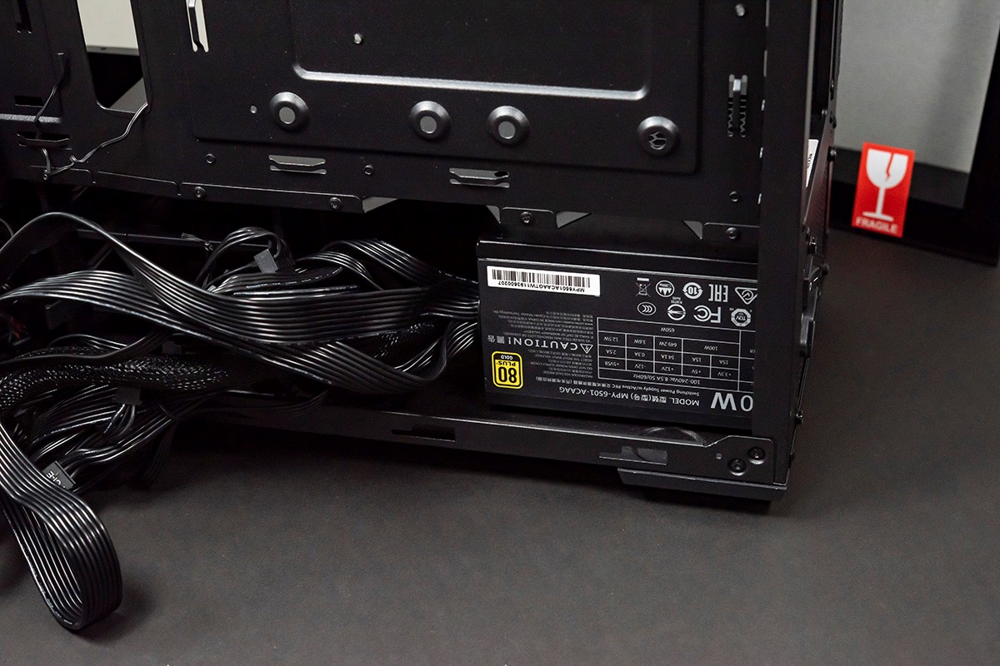
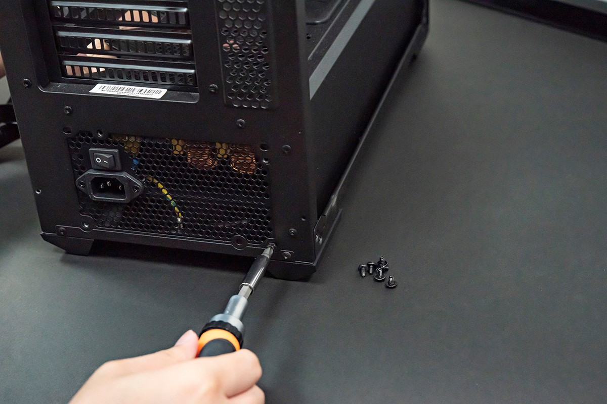
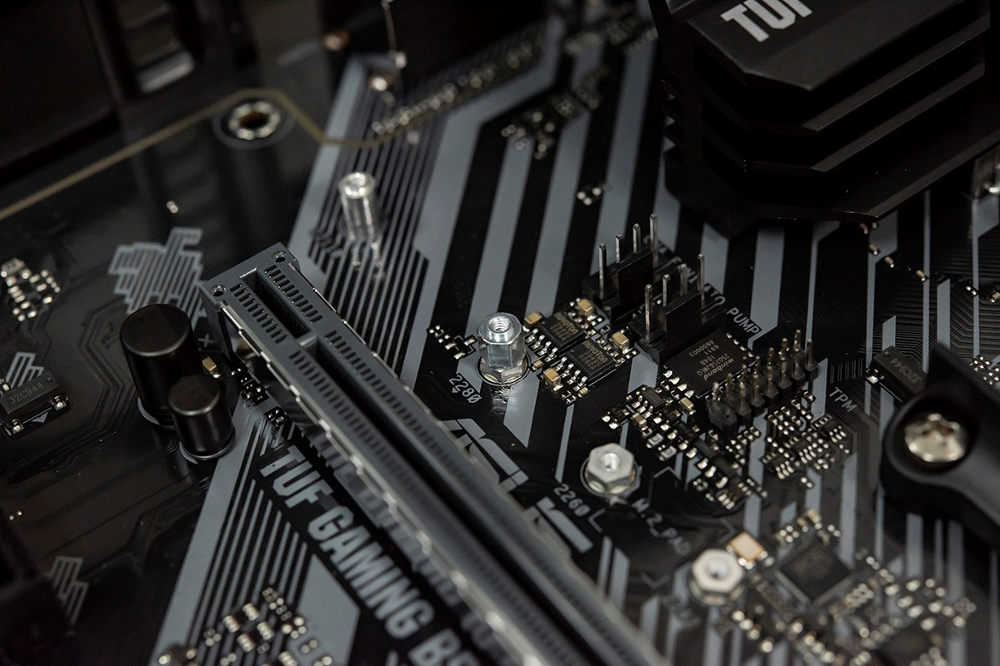
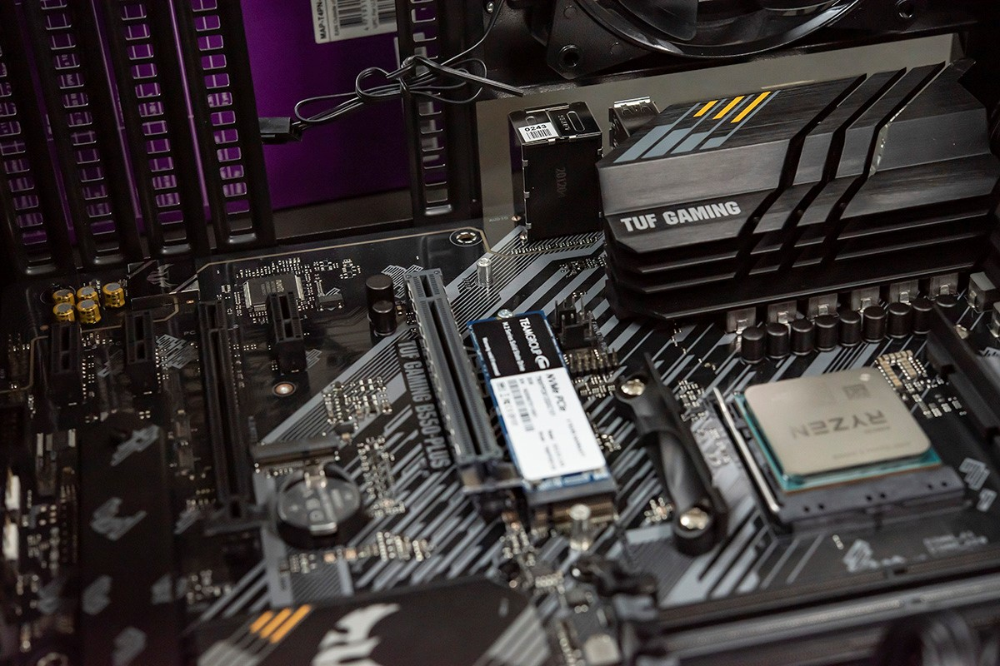
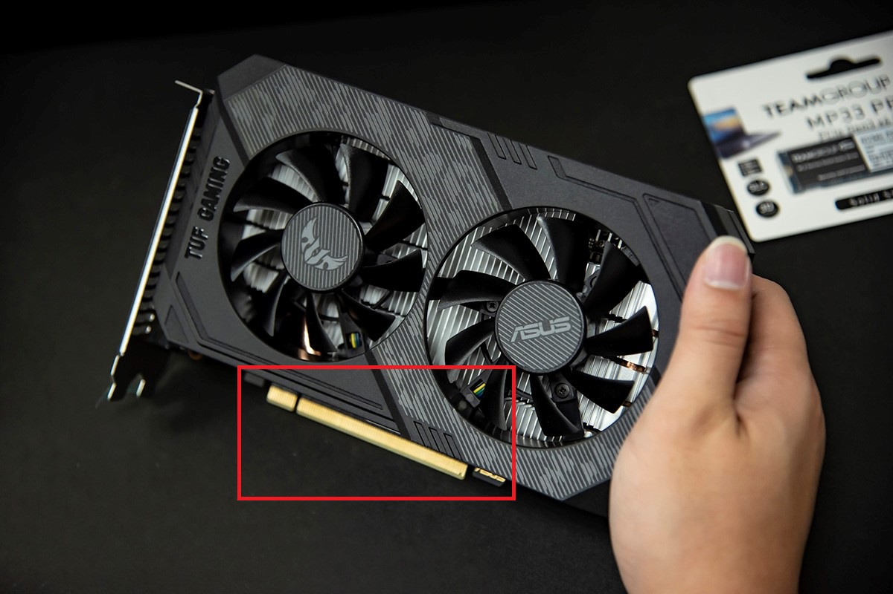
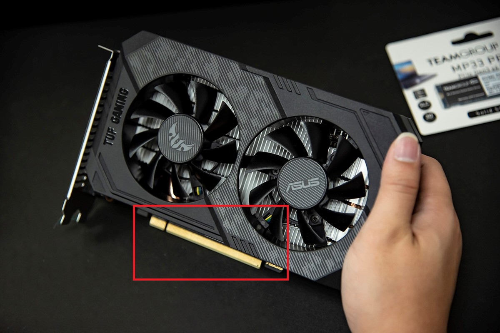

Quieres armar tu propia computadora?
No te voy a mentir ... no es taaaaan fácil, aunque tampoco es necesario ser un experto para hacerlo. En esta pagina te contamos todos los pasos a seguir para lograrlo.
debes prestar atención a que el uso de una fuente de alimentación de un fabricante importante con una mejor garantía, como el duradero CoolerMaster, reducirá la posibilidad de que se queme. La potencia debe ser suficiente para soportar el funcionamiento normal de la PC. En términos generales, se recomienda elegir una fuente de alimentación de más de 650W para una compilación de PC con una tarjeta gráfica discreta. El gabinete y el enfriador de la CPU son básicamente los mismos siempre que sean compatibles. Cualquier cosa que no sea lo suficientemente mala como para convertirse en un horno puede considerarse.
La fuente de alimentación
En principio, si hemos adquirido un gabinete que no incluía fuente de alimentación, lo primero será montar la fuente al chasis del gabinete, para lo cual se la ubica de manera que el ventilador disipador de la misma quede orientado hacia la parte posterior de la carcasa, y que los cables de alimentación queden hacia el interior. Una vez colocada, debe ser sujetada con los tornillos.
 Montar el procesador
Si bien podemos instalar el procesador de la computadora una vez que la motherboard se encuentre sujetada al chasis del gabinete, lo más recomendable es en principio fijar el procesador en la motherboard de antemano.
Lo primero que haremos es identificar el zócalo en el que se ubicará el procesador el cual es fácilmente detectable, ya que por lo general es grande y posee varios agujeros circulares, además de tener la indicación de las siglas ZIF. La ubicación correcta del procesador estará definida de acuerdo con la alineación de la ranura. El CPU posee una marca o una de sus esquinas recortada que es lo que nos permitirá colocarlo de manera correcta, ya que obviamente esta marca debe coincidir exactamente con la que tiene el zócalo.
Colocamos con cuidado el procesador sobre el zócalo, y sin ejercer mucha presión insertamos los pines del procesador en las ranuras del zócalo. Para ello no debemos hacer fuerza, sólo dejar que el CPU se integre al zócalo. En el caso de que esto no suceda, posiblemente se deba a que el procesador posee alguno de sus pines doblados, el cual podremos enderezar con mucho cuidado con la ayuda de un destornillador plano.
Luego bajamos la sujeción del zócalo, a fin de que el procesador quede bien fijado a la targeta madree.
Una vez realizada la tarea, y sólo en el caso de que el procesador no incluya disipador de fábrica, deberemos montar uno sobre el CPU, utilizando los anclajes que incluye el zócalo. Es probable que antes de colocar el disipador nos veamos en la necesidad de distribuir pasta térmica con los dedos, de forma cuidadosa hasta formar una película muy fina sobre el procesador, siempre evitando que se acumule demasiada pasta, y luego recién podremos colocar el disipador.
De todas formas siempre es recomendable adquirir un procesador que incluya un disipador de fábrica, a fin de evitar errores de principiantes.
Instala el resto de las piezas en la placa base
Antes de la instalación, se recomienda colocar la carcasa plana para que pueda atornillarse fácilmente. Se puede instalar en el orden en que estamos acostumbrados: Instala primero el SSD PCIe M.2, luego el enfriador de la CPU en la base como se mencionó en el primer paso, seguido de la tarjeta gráfica, la memoria y finalmente el SSD SATA de 2.5”. La mayoría de los gabinetes en el mercado todavía tienen la posición del SSD de 2.5” en el lado de la fuente de alimentación, por lo que el cable SSD de 2.5” suele ser lo último que consideramos. Ten en cuenta aquí que la mayoría de las tarjetas gráficas discretas de rango medio y superior también deben conectarse al cable de alimentación PCIe de la fuente de alimentación.
 Montar memoria RAM
Los módulos de memoria RAM pueden montarse antes o después de colocar la motherboard en el chasis del gabinete. Eso depende de la decisión de cada uno.
Una vez que identificamos los bancos para la memoria RAM, debemos colocar cuidadosamente cada módulo sobre ellos y empujar el mismo lentamente y sin ejercer fuerza hasta que escuchemos un clic.
Ese sonido nos permitirá saber que la memoria RAM se ha instalado de forma correcta.
La motherboard a la caja
Lo siguiente será montar la motherboard al chasis del gabinete, para lo cual sólo debemos alinear la motherboard de forma correcta a la bandeja que incluye el chasis para ello, y luego fijarla con los tornillos que vienen de fábrica con la carcasa.
Debemos asegurarnos que los distintos conectores para bahías queden debidamente ubicados, con el fin de posteriormente poder montar las placas que creamos necesarias para nuestra computad
Conexión de cables
Antes de continuar introduciendo componentes, es recomendable conectar algunos cables a la motherboard. En principio debemos conectar la motherboard a la fuente de alimentación.
También es conveniente conectar los cables del panel frontal del gabinete, tanto el de Power y Reset como los leds, los puertos USB donde conectaremos los periféricos y demás. Para hacerlo lo mejor es recurrir al manual de la motherboard, donde se indica claramente cómo deben ser conectados de acuerdo al modelo.
Placas y más placas
Si hemos decidido incluir en la PC alguna placa extra, como puede ser una placa de video
Para ello debemos identificar el zócalo PCI-E PCI o AGP en el que debe ir montada la placa. Se la coloca de forma que los pines coincidan con el conector y presionamos sin fuerza hasta escuchar el clic que nos indica que ha sido fijada.
 

Montar dispositivos
Lo siguiente será conectar los dispositivos internos de la computadora, y en primer lugar lo haremos con el disco rígido. Este debe ser colocado en el soporte que posee el chasis del gabinete para ello, y una vez bien sujeto con los tornillos adecuados, iniciaremos el conexionado.
Cabe destacar que todos los dispositivos de almacenamiento llevan dos conexiones, una hacia la motherboard y la otra hacia la fuente de alimentación.
Debemos entonces conectar el cable de energía desde la fuente de alimentación hacia la ranura del disco rígido, y luego conectar el cable SATA del disco a la motherboard. Básicamente, para el caso de la unidad de medios ópticos debemos realizar los mismos pasos.
Orden ante todo
Ya casi hemos concluido con el armado. Pero antes de cerrar el gabinete es recomendable acomodar los cables que hayan quedado sueltos sin ser utilizados, y que los ordenemos dentro del gabinete utilizando precintos o bandas elásticas.
Le echamos un último vistazo y una última revisión para corroborar que todos los cables y conexiones se encuentren correctamente ajustados, y ya podemos poner las tapas del gabinete.
El momento decisivo
Sólo nos resta ahora conectar al CPU los periféricos, es decir el monitor, el teclado y el mouse, como así también el cable para la energía eléctrica. Si todo sale bien, y el equipo enciende, sólo restará configurar los parámetros de la computadora y comenzar a instalar el sistema operativo que hayamos elegido.